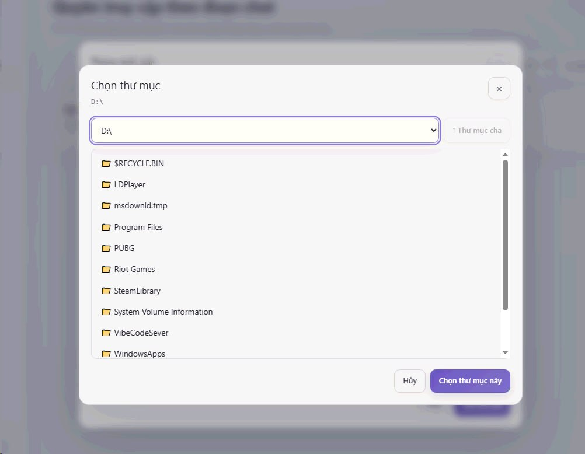

1
Name the connection and choose a Workspace
In Desktop Coworker, select Add connection and keep Step by step selected.
- Connection name: choose a name that makes the ChatGPT account easy to recognize.
- Workspace: choose the folder ChatGPT should start working from first.
Workspace is not an access limit by default. To restrict folder access, use Full form → Safety after setup.
Select Continue.
